2 Terminal Basics
Key Terms
Terminal: An environment that allows a user to interact with a computer by using interactive text, rather than a graphical window.
Command Line Interface (CLI): The Command Line Interface (CLI) is a text-based environment on your computer where users input commands. These commands are then processed by the command line which will execute specific tasks.
Shell: A shell is a program that interprets the user’s input to the terminal and processes it into meaningful, and actionable information for the computer. In many Linux Operating Systems, Bash is the default shell. In newer Macs (built post-2021), the Zshell is the default shell and on the Windows operating system, PowerShell is the default shell.
Note: For clarity, we will use “terminal” to indicate terminal emulators and CLIs.
What is the Terminal?
The terminal provides an accessible interface for users to interact with their computer, enabling them to input commands and receive direct output. As an integrated human interface device, the terminal functions similarly to a more primitive version of window managers such as Finder (Mac), Explorer (Windows), and Nautilus (Linux). While window managers allow users to navigate folders, move files, and perform other tasks through GUI (graphical user interface), the terminal achieves the same actions through text-based instructions. In the terminal, instead of clicking and dragging, users can efficiently manage files and directories, log into remote computers, launch applications and more using typed commands. Though it may seem more intuitive to manually navigate through a window manager, the terminal can achieve all of this functionality and more. Note that in cases where users are logged into a computer remotely, this is often the only way one can interact with the remote computer.
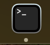
(VCL, 2025)The terminal interacts with the file system through the Command Line Interface (CLI), which allows users to navigate between folders, and manipulate specific files. The users type commands into the CLI and the terminal operates accordingly depending on what operating system is used.
Note: Command-line syntax varies by operating system. For example, to check your current working directory, Mac and Linux users can use the pwd command. In Windows, entering cd without arguments will display the current directory, though this usage is less standard. Alternatively, Windows users can install the Windows Subsystem for Linux (WSL) to run a full Linux environment directly within Windows, enabling access to Linux-style commands like pwd.
Navigating the terminal can be more efficient than using a window manager by adapting to command shortcuts. The up arrow shortcut allows users to scroll through previous commands. The tab command auto-completes directories, file names, etc. For example, if one needs to run a command that was already used, by simply clicking the up arrow the terminal will start “flipping” through the past commands. In cases where the file path is long (such as my_totally_awesome_secret_file.py), using the tab button after typing the first few characters of the file name can save the user’s time while reducing human error in typos. If you used a command a long time ago, typing the history command will show a log of all past commands.
Importance of the Terminal & Command Line Proficiency
By gaining terminal proficiency, you can efficiently manage files, navigate and manipulate large datasets, and automate repetitive tasks. When accessing a remote computer (see (ref?)(#remote_computing)), one often only has access to that computer via a Command Line Interface. With a little practice, you might come to favor the terminal for its ability to speed up tasks like traversing folders and reducing human error, particularly when handling large volumes of files across different locations.
It is important to understand the types of commands you will encounter: internal and external. Internal commands are built into the computer’s shell, whereas external commands are stored and executed from the computer’s disk.
Accessing the Terminal
Now that we’ve introduced the terminal, let’s look at how to access it. The process varies by operating system, each of which provides its own tools for terminal access. We’ll cover how to open the terminal on Mac, Linux, and Windows after a brief overview of these systems.
Linux & Unix
There are two main ways to open a Terminal while using a Linux OS:
- Press the buttons CTRL + ALT + T at the same time.
- In the Dash Bar open Show Application and find the Terminal application.
Mac
On a Mac, you can access the terminal one of two ways:
- Look up Terminal in the launchpad.
- Navigate in Finder. Click on Finder → Applications → Utilities → Terminal in Finder.
Windows
Terminal access in Windows is a bit more complicated as compared to macOS and Linux, because Windows does not have a UNIX backbone like the other operating systems. There are three methods for accessing the Terminal application on your Windows computer.
-Method 1. Every Windows computer comes with a pre-installed Command Prompt, for the default terminal. You can access the Command Prompt by searching for cmd in the Start menu.
Note That The Command Prompt does not contain all of the functions that will be discussed in this book.
-Method 2. If you want to follow all of the functions described in this book, you will need a more advanced terminal. This terminal is pre-installed on Windows computers called a PowerShell. You can access the PowerShell by searching for PowerShell in the Start menu.
Refer to the official Microsoft documentation for more information about the functionality of PowerShell.
-Method 3. The Windows Terminal is a new application that is more powerful and can run both the cmd, the PowerShell and other types of terminals. The Windows Terminal does not come pre-installed in all versions of Windows. You can download it from the Microsoft Store, if it is not pre-installed on your device.
Using the Terminal to Navigate
Checking Location/Exercises to Test Understanding
If a user wants to know what directory they are currently in, they can utilize the pwd (print working directory) command. The pwd command is useful when working in a complex environment, since it’s easy to lose track of where you are within the file system. Before running a command that modifies a large directory, make sure that you are in the correct directory that you intend to modify. Additionally, when working on a remote server or shared system, using the pwd command ensures that you are operating in the appropriate directory (either your own or one that is shared)
Example syntax: type pwd into the CLI.
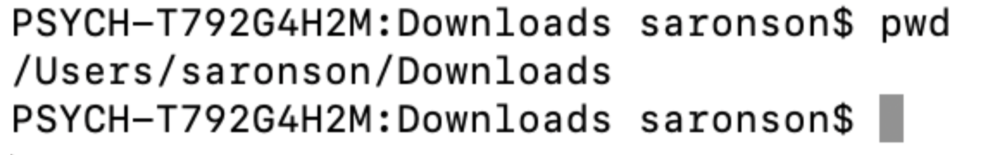
(VCL, 2025)Checking Your Location – Where Are You?
Goal 1 : Before embarking on your journey, it’s essential to check your current position. Think of this as marking your starting point on a map.
Input 1 : Use the command pwd (Print Working Directory) to display your current location within the computer’s file system.
Listing Files – What’s Around You?
Goal 2 : Explore your surroundings! There might be useful files nearby.
Input 2 : Use ls to list the contents of your current directory and see what’s around you.
Navigating to Your Home Directory – Returning to Base
Goal 3 : Ensure you’re back at your home base before continuing your exploration.
Input 3 : Use cd ~ or simply cd to return to your home directory.
Changing Directories – Exploring New Paths
Goal 4 : Venture into different folders within your home directory, such as Documents or Downloads.
Input 4 : Use cd followed by the folder name to move into that directory.
Example:
cd Documents
This command will take you to the Documents folder.
💡 Hint: If you’re unsure where to go, refer back to Input 1 (pwd) to check your current location and Input 2 (ls) to see available folders.
Changing Location
The cd command takes in an argument and the name of the folder or directory, that the user wants to navigate to. The user uses this command by typing cd followed by the folder path in the CLI.
 (VCL, 2025)
(VCL, 2025)
cd ~/Downloads: This command will take the user to the Downloads folder in their home directory on their computer. The ~/ explicitly specifies that the Downloads folder is in the user’s home directory.
cd Downloads: This command would attempt to navigate the user to a folder called “Downloads” in the current directory that they are in. If the user is already in their home directory it will work the same way that cd Downloads works. cd Downloads navigates the user to the “Downloads” folder within their home directory. However, if the user is not currently in the home directory, this command will attempt to find a folder within the current directory called “Downloads”. This could result in an error appearing if there is no folder called “Downloads” in the current directory.
Listing Files
It is often helpful for a user to be able to see all files and folders within a specific directory. This can be done by typing ls, and a list of files will appear.
Example Syntax
ls Documents: This command will display a list of all the files and folders within the “Documents” folder that is located in your current directory. If the user is in a directory that contains a “Documents” folder, ls Documents will show the contents of that “Documents” folder. If there is no “Documents” folder in the current directory, the terminal will return an error indicating that the directory does not exist. If you want to list the content of a folder that is not in your current directory, you can provide a full path to it (e.g., ls /home/bvcl/Documents).
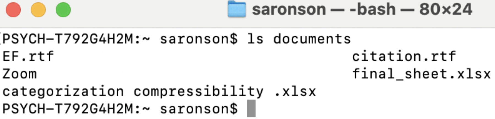
(VCL, 2025)Creating and Deleting Files & Directories
mkdir
The mkdir command is used to create a new directory (or folder) in the file system.
Example Syntax
- Unix/Linux/Mac:
mkdir folder_name - Windows (Command Prompt):
mkdir folder_name
This command makes an empty directory called “folder_name” at the specified location, and you can include the full path if you want to create it in a different directory.
For example: mkdir /Users/username/Documents/new_folder
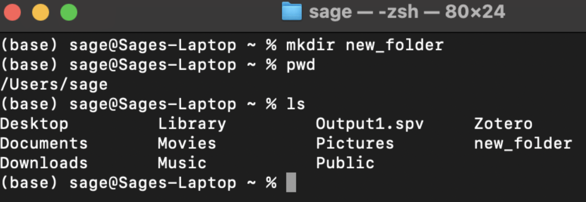
(VCL, 2025)Touch
The touch command is mainly used to create empty file structures. For example, if you want to create a new file called terrier.txt within a folder called dog in your current directory you would navigate to the dog folder and type the following into the command line: touch terrier.txt
The .txt denotes that you are creating a text file. You also have the ability to create more than one file at once. Type: touch terrier.txt collie.txt This would create two new files, one called terrier.txt and the other called collie.txt.
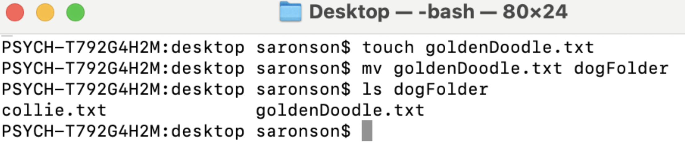
(VCL, 2025)Removing Commands
The rm (remove) command is used to delete a file or directory.
This is a serious command, once a user deletes a file it is not recoverable. Warning: be careful about the irreversible nature of rm.
Syntax: rm terrier.txt This command will delete the terrier file from your computer. You can delete more than one file at once.
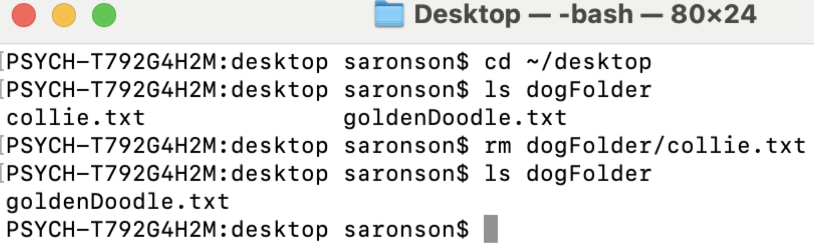
(VCL, 2025)To protect the user from making a mistake, the default rm command will not delete a directory. In order to delete a directory, the user needs to type one of the following commands: rm -r directoryname OR rm -rf directoryname
The -r signifies a recursive functionality, meaning that all of the contents within the directory including the subdirectories and files will be deleted.
The -rf command signifies a recursive force command. It is used to forcefully delete files and directories without any confirmation from the user. It is incredibly powerful and should be rarely and cautiously used.
Moving and Renaming Files & Directories
Users would like the ability to move and rename a file or directory from its current location to a specified location. One could do this by inputting mv, or “move” command in the terminal.
-Example syntax: mv participant001.csv experiments This command would move the file called participant001.csv to the experiments directory.
-Another example of using the mv command using the entire file path would look like this: mv participant001.csv /home/bvcl/Documents/experiments
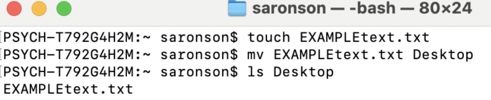
(VCL, 2025)To rename a file or directory we utilize the same command mv. For example if the user wanted to rename the file participant001.txt to be participant1.txt they would type the following into the command line: mv participant001.txt participant1.txt
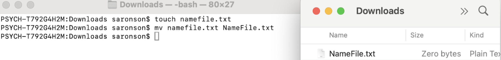
(VCL, 2025)If the user wanted to rename a directory, they would type the name of the directory that they want to rename followed by the desired new name.
-Example: mv experiments BehavioralExperiments
This would rename the experiments directory to now be called BehavioralExperiments.
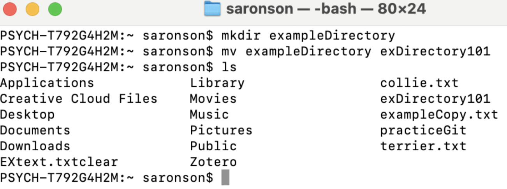
(VCL, 2025)Copying Files & Directories
A user can make a copy of a file within the same directory or a different directory. If a user wants to create a copy of a file into a different directory, they can proceed with the following command:
cp participant001.txt /home/username/Desktop. This command copies the contents of participant001.txt from the current directory to the Desktop.
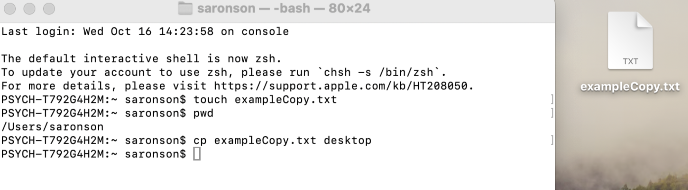
(VCL, 2025)If the cp command contains the names of two files, it copies the contents of the first file into the second file. For example: cp participant001.txt dataParticipant.txt. This command would copy the contents of participant001.txt into the file dataParticipant.txt. If the file that the user is trying to copy into already exists, the cp command will overwrite the current information in that file.
Note: In this case, the file will not append, it will be overwritten. If the file does not already exist, the command will create a new file and copy the contents to that new file.
A user can also copy the contents of one directory to another by following the command: cp -r /path/to/sourceDirectory /path/to/destinationDirectory. This command would copy recursively (-r) all the contents of the sourceDirectory into the destinationDirectory. (The user can type -r or -R because it is not case-sensitive. However, we will encounter other commands that are case-sensitive in later sections of the textbook).
Managing System Processes
Top Command
Monitoring system resources in real-time is helpful for maintaining optimal computer performance. The top command is a powerful tool that allows users to do just that. When executed, top provides a dynamic display of all currently running processes, including details on CPU, memory usage, system load, and uptime. If a user notices their computer lagging, the top command can help identify resource-heavy processes that may need to be closed to improve performance. To use the top command simply type top into the command line and press enter.
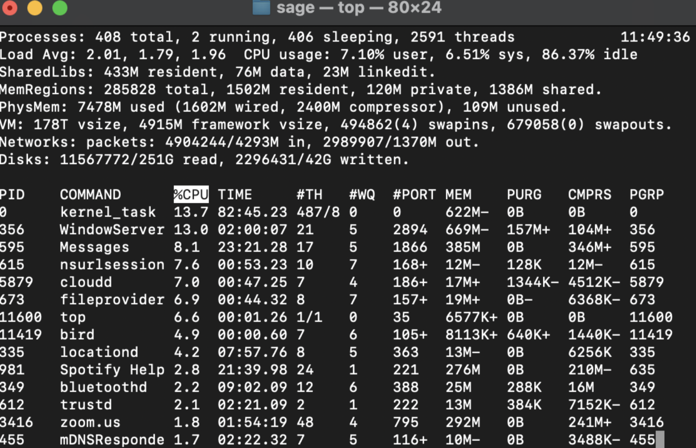
(VCL, 2025)Terminating Commands
If an application becomes unresponsive, a user can terminate the application by using the kill or killall command. The kill command is used to terminate a singular process using the process ID (PID). The PID is found in the leftmost column of the output of top. To successfully kill a process, type kill followed by the process ID into the terminal.
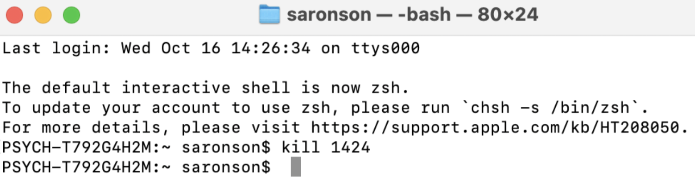
(VCL, 2025)The killall command terminates all instances of a process running on your computer’s system based upon its name. This is useful when the user wants to kill all processes running on the computer that have the same name. Example: killall firefox will kill the Firefox web browser.
Viewing Disk Space
The df -h command is valuable for users who need to check how much disk space is available (df stands for “disk free”) on their system in a human-comprehensible format (-h). The df command displays information about all mounted file systems and the disk usage for each. By adding the -h flag, the output is made more comprehensible, converting the usage into easily understood units like gigabytes and megabytes. Type df -h into the terminal to view this information.
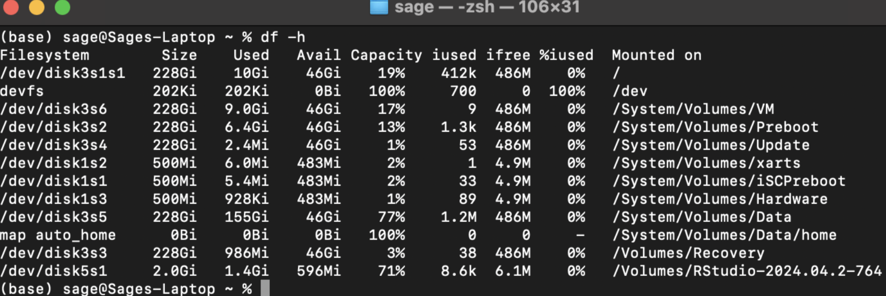
(VCL, 2025)Some Special Directories and Shortcuts
Here are some helpful shorthand ways to refer to some common directories.
‘.’: Refers to the current directory. Example: cp /home/username/Documents/experiments/participant001.csv . will copy the file located at this path to the current directory.
‘~’: Refers to the home or root directory. For example, the previous example could be shortened to cp ~/Documents/experiments/participant001.csv ..
'*': The * character is called a “wildcard” and will match anything. For example, ls *.csv will list any files that end with the ‘.csv’ extension, and ls a* will list any files starting with the letter “a”.
Finding Files & Directories
The find command lets you search your computer for specific files or directories. It’s a powerful and flexible tool that supports searching by name, size, modification time, or even file content. Because of its flexibility, there are several ways to use it depending on your needs.
To search for a file or folder, use the following format:
find directory option criteria
directory: the folder where you want the search to begin. Use “.” to search in the current directory, or “/” to search the whole file system.option: how you want to search—e.g., -name for a filename, -size for file size, etc.criteria: the specific value you’re looking for, such as a file name (“report.txt”) or size (+10M).
If a user is searching for a file named participant.txt, they would type: find -name participant.txt
Other examples:
find . -name “p*”: Let’s break down the command:find .specifies the current directory as the starting point for the search, and"p*"specifies all files starting with the letter “p”.find / -name participant.txt: Searches the whole file system “/” for a file with the name “participant.txt”. Note that this command might be very slow if there are many files on your computer!
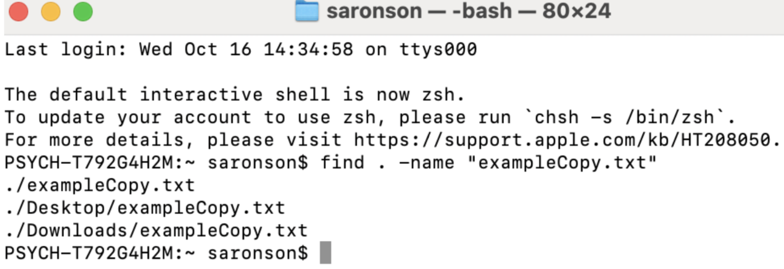
(VCL, 2025)If you want to perform a case-insensitive search, use the flag
-inameinstead of-name.Example:
find . -iname participant.txtThis command would locate files on your local computer that were either namedParticipant.txtorparticipant.txt.
Searching by Size
You can also search a file by size in the Linux system. To do so use the -size tag and the find command. Add a + or - sign to the size to represent greater than and less than. For example, say you want to search the entire file system for files that are greater than five gigabytes you would type the following command into the terminal:
Example: find ./ -size +5G
You can also search for files within a certain size range. Say you wanted to locate files between the size of 25 gigabytes and 30 gigabytes, you would type the following command. The “+” means “search for files larger than”, and the “-” means “search for files smaller than”.
Example: find ./ -size +25G -size -30G
Searching by Time
Let’s say that you are looking for a file you created last week, but you can’t remember it’s name or location. You can search a file system using the -mtime parameter. This parameter helps a user search for files that were modified within the last seven days. To do so input the following command: find ./ -mtime -7. This indicates that we are looking for files within the last 7 days. If you wanted to search for files that are at least a week old, you could modify this command to find ./ -mtime +7, and if you knew that you were looking for a file created one week ago exactly, you could use find ./ -mtime 7. Of course, there is nothing magical about the number 7 - feel free to change this to any number that suits your needs.
Wordcount
The
wc(word count) command allows a user to count various elements within a file:wc -lprints the number of lines in a file. This can be helpful for ensuring that all trials in an experiment are written correctly. For example, if there should be 1024 trials, using the commandwc -l file_name.csvallows the user to verify that the file contains the expected number of lines, confirming that all trials are accounted for.wc -wPrints the number of words in a file. This may be useful if there is a specific word count that the user must meet given specific instructions.wc -cDisplays the count of bytes in a file. Knowing the number of bytes helps the user make intentional storage decisions.wc -mPrints the count of characters in a file.wc -LPrints the length of the longest line in a file.
Other Terminal Uses
Users can use the terminal for various other tasks such as launching applications, running scripts, and editing text with Vim (see Chapter 4 for more), and using version control systems like Git (see Chapter 8 for more). In the Visual Cognition Lab (VCL), students often need to launch applications like Spyder and PsychoPy. To do this, simply type the application name into the terminal and press Enter. Keep in mind that launching applications directly through the terminal is fast and easy.
The Man Command
The man (“manual”) command is super helpful as it acts as a kind of terminal glossary. It provides the user with information about all terminal commands. Simply type the command man into the terminal followed by the command that you want to learn more about.
- Example:
man pwdAfter typing the commandman pwdthe following output will appear on your terminal. (Note: If you want to exit the manual terminal page, typeq.
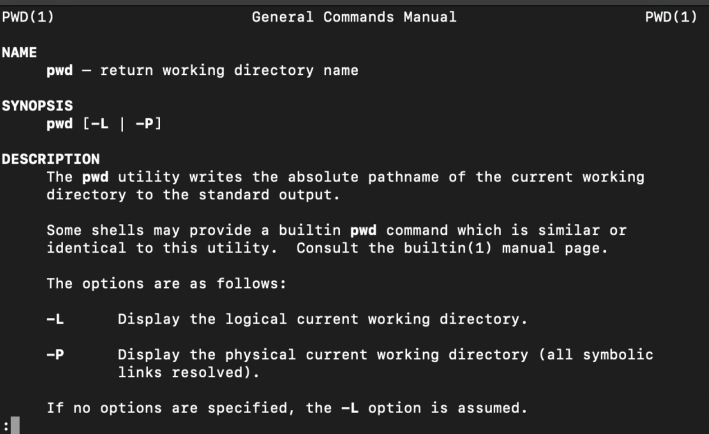
(VCL, 2025)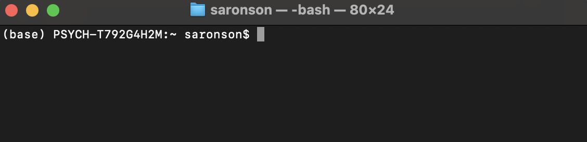
(VCL, 2025)Quitting the Terminal
Once you are in the terminal application, you can look to the top bar on your computer. On the left, next to the Apple sign, there is a Terminal button. Click on “Terminal” and scroll down to the “Quit Terminal” button. An alternative method for quitting the terminal is clicking the red exit button located in the top left corner.
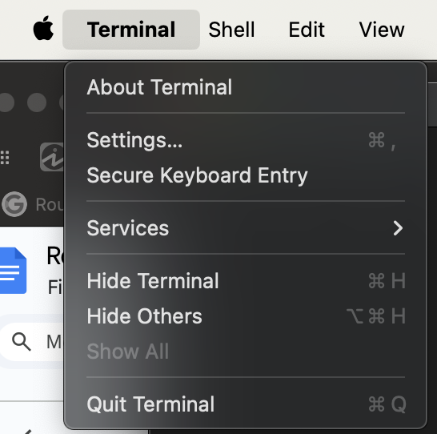
(VCL, 2025)Further Reading
We recommend the following sources for more information on this topic:
The Unix Shell by Software Carpentry.
Shell from MIT’s “Missing Semester” Course.
Shell Tools and Scripting from MIT’s “Missing Semester” Course.
Practice Questions
Explain in your own words: what is the main purpose of the terminal?
In what cases is it more efficient to use the terminal as opposed to the GUI?
Say you have too many files in your Documents folder to remember, what command will let you see all the files? What about if you only wanted to see the files that ended with .JPG?
Sammy needs to create a new folder for her project, called “mind_reading”. What command should she type?
Joey wants to create a copy of an existing file, participant001.txt. He wants this copy to live on his desktop and have the same name as the existing file. What commands should he use?
You’ve been working with the terminal and are now ready to quit the terminal. How can you do so?
How do you return to your home directory?
What command lists files in a directory?
What’s the difference between cd Downloads and cd ~/Downloads?
Why does the chapter specifically highlight rm -rf?